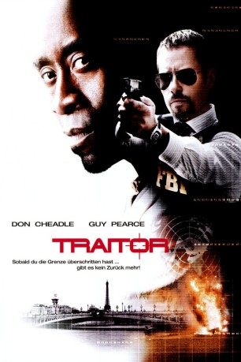

#548 Traitor: Zwischen den Fronten
Alternativ: Traitor
 
 IMDB-Wertung: 7.0 / 10
IMDB-Wertung: 7.0 / 10  Metascore: 60
Metascore: 60 
Der muslimische Afroamerikaner Samir Horn gerät nach einem gescheiterten Sprengstoffdeal in jemenitische Gefangenschaft. FBI-Agent Roy Clayton scheitert beim Versuch, den Landsmann als Informanten zu gewinnen. Im Gefängnis freundet sich Samir mit dem Extremisten Omar an, der ihm schließlich zur Flucht verhilft und in seine international operierende Terrorgruppe einführt. In der Folge entpuppt sich der Amerikaner als überaus wertvoller Mitarbeiter, verfügt er doch dank seiner Erfahrungen beim US-Militär über detaillierte Kenntnisse im Umgang mit Sprengstoff und Bomben. Während das FBI die Schlinge immer enger zieht und Samir als Hauptverdächtigen einstuft, hat der Terrorchef allerdings nach wie vor Zweifel an dessen Loyalität. Ein Bombenanschlag auf das US-Konsulat in Nizza soll diese endgültig ausräumen ...
Jahr: 2008
Dauer: 114 Minuten
FSK: 12
Land: USA Studio: Overture FilmsTonspuren: DTS - ,
Untertitel: Deutsch,
Auflösung: 1080p (1920x800) Größe: 11468 MB
Genre: Action, Krimi, Drama, Thriller
Regisseur: Jeffrey Nachmanoff
Drehbuch: Jeffrey Nachmanoff, Steve Martin, Jeffrey Nachmanoff
Soundtrack: Mark Kilian
Darsteller:
 Don Cheadle als Samir Horn
Don Cheadle als Samir Horn Guy Pearce als Roy Clayton
Guy Pearce als Roy Clayton Saïd Taghmaoui als Omar
Saïd Taghmaoui als Omar Neal McDonough als Max Archer
Neal McDonough als Max Archer Archie Panjabi als Chandra Dawkin
Archie Panjabi als Chandra Dawkin Raad Rawi als Nathir
Raad Rawi als Nathir Mozhan Marnò als Leyla
Mozhan Marnò als Leyla Adeel Akhtar als Hamzi
Adeel Akhtar als Hamzi Jeff Daniels als Carter
Jeff Daniels als Carter Lorena Gale als Dierdre Horn
Lorena Gale als Dierdre Horn Alaa Safi als Omar's Crew
Alaa Safi als Omar's Crew Tom Barnett als Andrew Kelly
Tom Barnett als Andrew Kelly Simon Reynolds als Ted Blake
Simon Reynolds als Ted Blake Matt Gordon als Simon
Matt Gordon als Simon- Shahla Kareen als Suicide Bomber #2
- Ali Momen als Suicide Bomber #3
 Paulino Nunes als Suicide Bomber #4
Paulino Nunes als Suicide Bomber #4- Alexandra Castillo als Dark Haired Woman
- Jeff Kassel als Software Company Manager
- Mike McPhaden als Computer Tech
 Jonathan Walker als Hayes
Jonathan Walker als Hayes- Elias Zarou als Iqbal
- Myriam Blanckaert als Inspector Gilles' Deputy
 Nick Alachiotis als Ship Crew Member
Nick Alachiotis als Ship Crew Member- Alex Poch-Goldin als FBI Surveillance Agent
- Ron Bell als Bus Driver
- Sima Fisher als Computer Girl , uncredited
- Giota Trakas als Business woman , uncredited
- Alyy Khan als Fareed
 Hassam Ghancy als Bashir
Hassam Ghancy als Bashir- Scali Delpeyrat als Inspector Gilles
- Mehdi Ortelsberg als Ali
- Aizoun Abdelkader als Ahmed
- Mohamed Choubi als Security Force Captain
- Farid Regragui als Wadi
- Habib Hamdane als Scarecrow
- Youness Sardi als Omar's Crew
- Joseph Beddelem als Omar's Crew
- Patrick Rodney Barnes als Suicide Bomber #1
- Dani Jazzar als Munir
- José Heuze als Alvarez
- Scott Wickware als Dupree
- Catherine Galloway als BBC Reporter
- Natasha Roy als Translator #1
- Yassine Mamadou als Samir, 10 Years Old
- Omar Mamadou als Samir's Father
- Mostafa Hnini als Fake Policeman
- Michaël Troude als Spanish Patrolman
- Rodriguez Gelos als Tour Group Employee
- David Clark als Security Agent , uncredited
Datei: X:\2008(N-Z)\Traitor Zwischen den Fronten (2008, FSK12, 1920x800).mkv seit 08.03.2015
Festplatte: HD 2008(G-Z)-2009(A-F)
 Es gibt insgesamt 91 Filme in der Gruppe '2008(N-Z)'
Es gibt insgesamt 91 Filme in der Gruppe '2008(N-Z)'